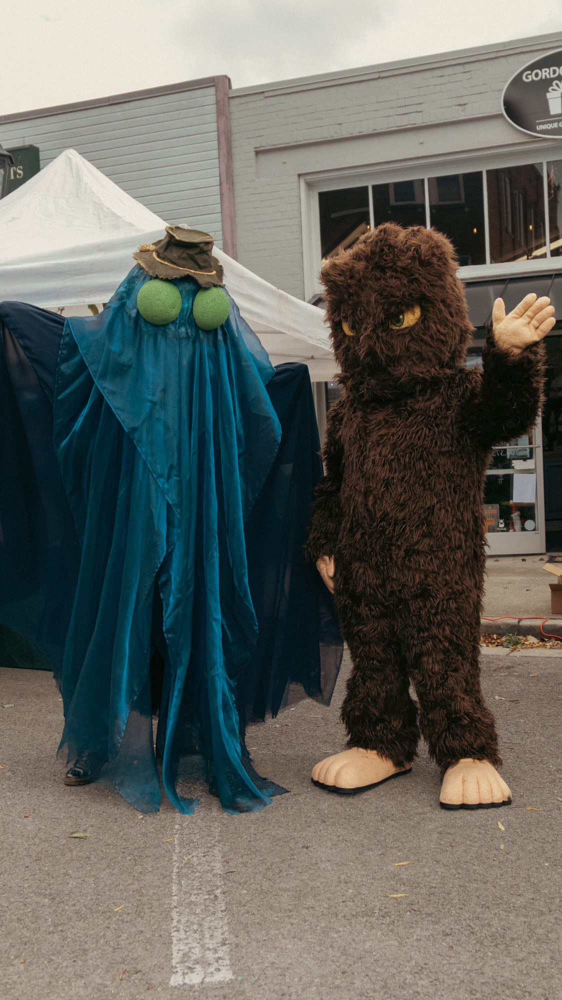

Stop no. —
Somewhere strange
Anywhere in the United States
Press the button and OddWay will deal you a real stop: a cryptid museum, a haunted inn, a ship parked on a bluff.
No. II
A road-trip guide to the strange: cryptids, folklore, haunted places and roadside oddities along your route.

Give OddWay a route and it finds the detours worth taking: Bigfoot sightings, local legends, haunted hotels, UFO landmarks, odd little museums and giant roadside statues.
I designed and built it end to end, from the brand and the research behind every stop to the web app itself, written in Next.js and TypeScript on Supabase.
Give it a start and a finish. OddWay takes care of everything in between, including the two-lane roads you would never have chosen yourself.
Filter by what you actually want to see, then check how far each stop pulls you off course before you commit to it.
Add the good ones to your trip, take the directions with you, and go stand in front of the thing.
Every stop is filed under one of seven categories, so a trip can be all haunted hotels or all giant statues.
One stop at a time, dealt live from OddWay’s index of nearly 7,000 places. Pick a kind of strange, or leave it to chance.
Stop no. —
Anywhere in the United States
Press the button and OddWay will deal you a real stop: a cryptid museum, a haunted inn, a ship parked on a bluff.
An events listing: cryptid festivals, haunted houses and seasonal mazes, sortable by distance from wherever you are.
The hard part is the calendar. Most of these events follow a pattern, like the third weekend in September, rather than a fixed date, so each year’s dates will be confirmed by hand. An event listed on the wrong weekend is worse than one not listed at all; nobody should drive four hours to an empty field.